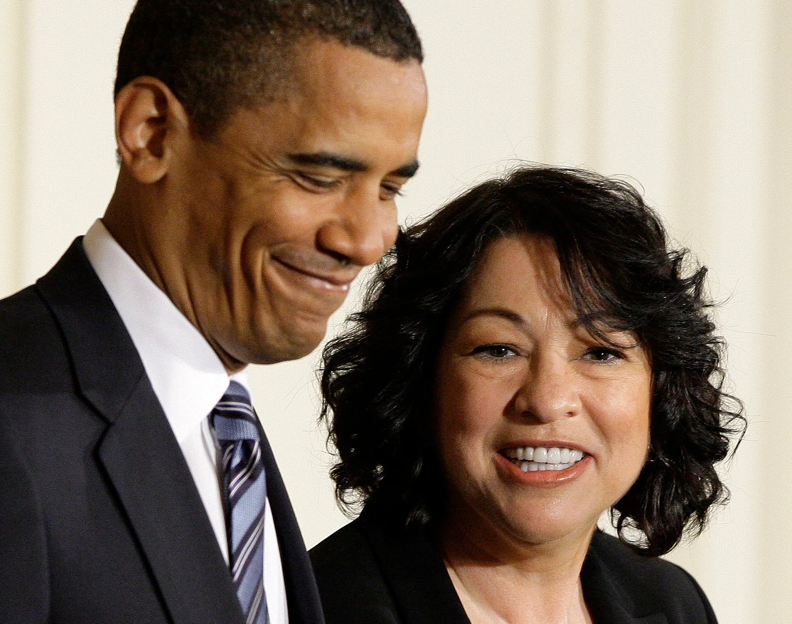

Sonia Sotomayor is one of the many amazing latinas in our world today she was the 4th women in the supreme court along with Sandra Day O'connor, Ruth Bader Ginsburg and Elena Kagan.
Sonia Sototmayor was the fourth women serving the sepreme court but the first latina to be in the court. She was born on June 25 1954 in New York, New York
Despite being diagnost with diabetes at a young age she was an exelent student she graduated on 1972 validetorian of her hight school class. And reseived a full scholaship to princeton university, then in 1976 she got a degree in history and earned the "Pyne honor prize" whic is considered the highest award given to an undegraduate at Princeton.
After graduating she left to Yale Law School where she took the job as the editor to the Yale Law Yournal. She then graduated in 1979 and passed the new york bar exam and in 1980 she became a liscensed lawyer. Wasn't until 1991 when she got the job as a U.S Distric Court by Presitent George W.H. Bush, she earned a reputation as someone who is "just the facts"
However in 2009 when supreme court justice Davin Souter retired Obama nominated Sonia Sotomayor for the position and it became oficial on August 8, 2009. She's known for her strong voice and supporting the rights of thoose accused